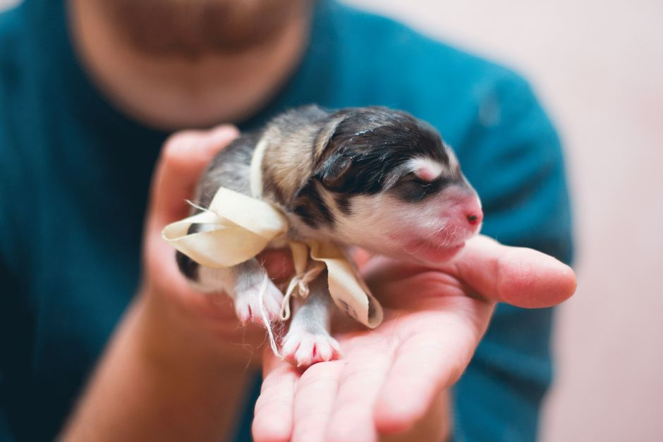
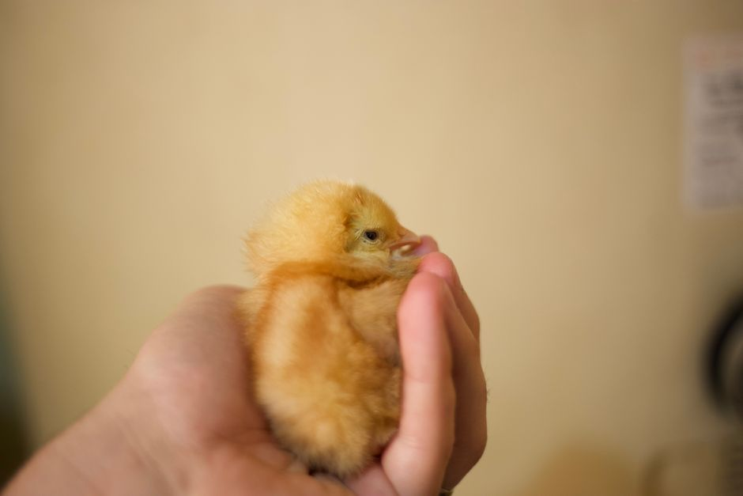
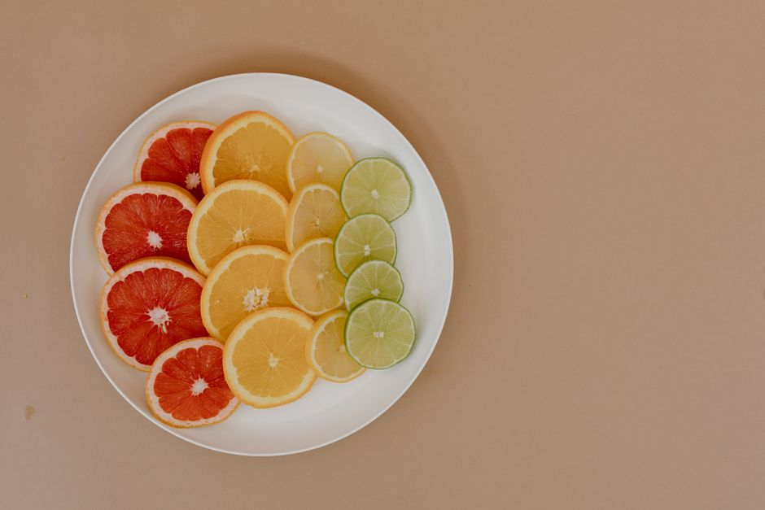

Key Foods for a Balanced Diet for Your New Puppy
Congratulations on welcoming a new furry friend into your home! Proper nutrition is crucial for your puppy's growth and overall health. Here are four key foods that should be a part of your puppy's balanced diet.

Photo: Andrew Kota / Pexels
1. High-Quality Commercial Puppy Food
Start with a high-quality commercial puppy food designed for the size and breed of your puppy. Look for brands that list meat as the first ingredient. Avoid foods with fillers like corn, wheat, and soy. Choose a brand that offers a variety of protein sources, such as chicken, beef, and fish. For instance, if your new puppy is a medium-sized Labrador Retriever, you might opt for a brand like Blue Buffalo Puppy, which is known for its high-quality ingredients and variety of protein options.
2. Fresh Water
Water should always be available to your puppy. Ensure that the water is fresh and changed daily to prevent bacterial growth. A simple way to ensure your puppy stays hydrated is to place a bowl of fresh water in a spot that is easily accessible. For example, if your puppy likes to play in the living room, consider keeping a water bowl there.
3. Cooked Eggs

Photo: Tiut Vladut / Pexels
Eggs are a great source of protein and can be easily included in your puppy's diet. Cooked eggs can be fed to puppies from the age of 3-4 months, depending on the breed. Boil the eggs until they are hard-boiled, then gently peel the shell. Serve the egg with a small amount of cooked chicken or beef. For instance, you can mix one hard-boiled egg with 1/4 cup of finely chopped cooked chicken. This can be a nutritious and tasty addition to your puppy's meal.
4. Fresh Fruits and Vegetables

Photo: Tara Winstead / Pexels
Introducing fresh fruits and vegetables can provide your puppy with essential vitamins and minerals. Start with small portions to see how your puppy reacts. Good choices include grated carrots, small pieces of cooked sweet potato, and slices of apple. A concrete example could be preparing 1/4 cup of grated carrots to add to your puppy's meal. This not only adds flavor but also provides fiber and essential nutrients.
Avoid These Common Mistakes
- Do not feed table scraps: While it might be tempting to share your food with your puppy, table scraps can be harmful and lead to digestive issues.
- Do not overfeed: Puppies should be fed based on their age, size, and activity level. Overfeeding can lead to obesity and other health problems.
- Do not give bones: Bones can splinter and cause injury to your puppy's digestive system.
By incorporating these four key foods into your puppy's diet, you can help ensure that they have a balanced and nutritious diet. Remember to introduce new foods gradually and observe your puppy's reaction to ensure a smooth transition.
Recommended products
As an Amazon Associate, I earn from qualifying purchases.